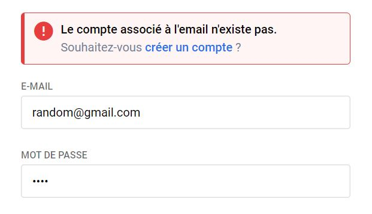

Made with standard technologies such as HTML/CSS + jQuery & PHP. This project was made to challenge myself about login system as well as understanding the Google login API.

A big part of that project was to send live responses to the user for a good UX.This was made by sending async requests with AJAX (simplified by jQuery).

Same story on the "sign in" side with cool UI cards to prevent from errors.
This personal project also was a great way to deal with the google login feature which in my case I use a lot to buy time. So i thought this would be a great opportunity to implement that to learn more about the functioning system behind that simple button.